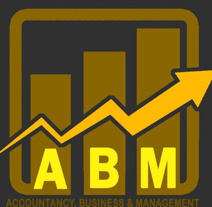

ABM
The Accountancy, Business and Management (ABM) strand marries creativity, mathematical application, and business sense to prepare the best business professionals of tomorrow. Taking ABM subjects in senior high school will introduce students to the concepts of financial management, business management, corporate operations, and accounting. Students who select this route will be prepared for colourful careers as managers, accountants, and business owners. Students who select this route will be prepared for colorful careers as managers, accountants, and business owners. These ABM courses will equip them with the necessary industry know-how and skills to perform well in their professions and run their businesses smoothly.
